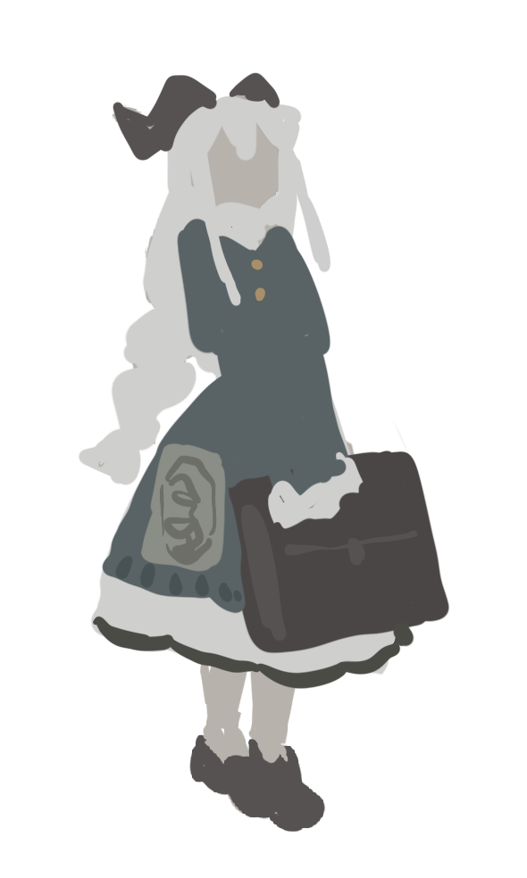
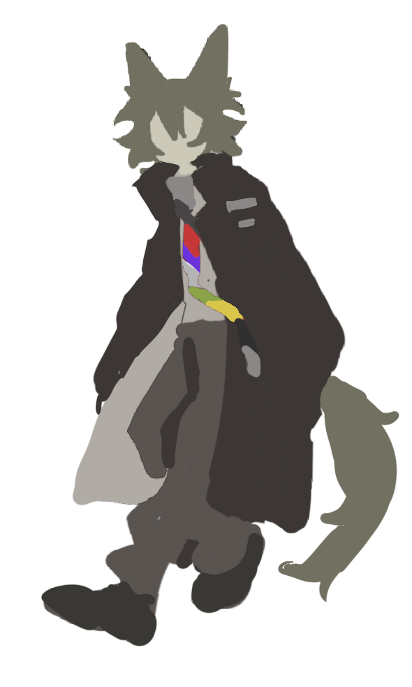

Name:つめ
我编不出来了总之先放一段话在这里吧
反正是人见人爱花见花开的lmh#家中耀祖##美系男子##屌丝男#
Name:U0
我还没编好:这oc还养不养了代表者
濒死的家女,有篡位耀祖之势#家中明珠##作者可能是头上长东西爱好者#


▶这里是 UTAU 相关内容的展示区域。
可以在这里介绍你的音源库、调校作品或者是未来的开发计划。
内容正在筹备中...
你好，这里是 4R。
一个喜欢创作和折腾网页的普通人。
联系方式：[你的邮箱/社交媒体链接]
感谢你访问我的个人站！